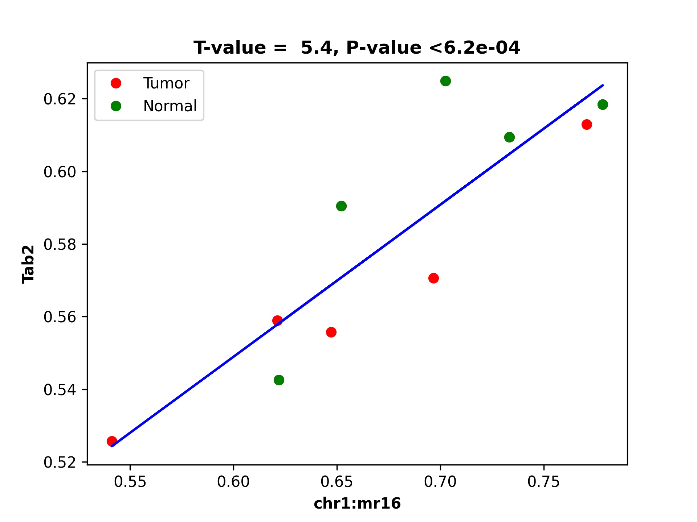

demoRAT
Demo for RAT is provided with the package. There are two bash scripts provided inside the demo/demo3_rat/. First one is run_rat_preprocess.sh and second is run_rat.sh where run_rat_preprocess.sh should be run first. Both are explained as under.
Step 1: Preparing files for dds_analysis
The first step involves preparing files for dds_analysis by running the preprocess command. This command integrates DMR and DEG data and prepares the necessary input files for further analysis. Here is the code:
dds_analysis preprocess \
-in_folder ../../data/rat_data/in_data/final_demo_data/rat_data/out_data/DMR_CpG_context/out_map2genome/ \
-in_string '_rat' \
-in_tss_file_mr ../../data/rat_data/in_data/final_demo_data/rat_data/out_data/DMR_CpG_context/out_map2genome/5_chroms_all_mr_data_range_dmrRanking_TSS_Up5000_Down1000_removedShort_overlap1e-09.bed \
-in_dist_file ../../data/rat_data/in_data/final_demo_data/rat_data/out_data/DMR_CpG_context/out_map2genome/5_chroms_all_mr_data_range_dmrRanking_noGenes_5dist_Up1000000_Up5000removedShort_overlap1e-09.bed\
-in_deg_file ../../data/rat_data/in_data/final_demo_data/rat_data/in_data/DEG/Adrenal1vsAdrenal2_DEG_genes_zscores.tsv\
-out_folder ../../data/rat_data/out_data/ \
-tss_file ../../data/rat_data/in_data/final_demo_data/rat_data/out_data/DMR_CpG_context/data/TSS_Up5000_Down1000_removedShort.bed \
-full_mr_file ../../data/rat_data/in_data/final_demo_data/rat_data/out_data/DMR_CpG_context/5_chroms_all_mr_data_range_dmrRanking.bed \
-in_genome_file ../../data/rat_data/in_data//final_demo_data/genome/rn6/rn6.enhancers_all_rn5_merged_rn6liftOvered_4dmr.bed \
-gene_col_name 'gene_name'
echo "To find DMR regions that are overlapping with TSS or 5distance regions of DEG - and preprocess Done"
Methylation region data with TSS: 5_chroms_all_mr_data_range_dmrRanking_TSS_Up5000_Down1000_removedShort_overlap1e-09.bed
5_chroms_all_mr_data_range_dmrRanking_noGenes_5dist_Up1000000_Up5000removedShort_overlap1e-09.bed
First two columns of DEG file: Adrenal1vsAdrenal2_DEG_genes_zscores.tsv
gene_name A_1_ A_2_ A_3_ A_4_ A_5_ A_6_ A_7_ A_8_ A_9_ A_10_ A_11_ A_12_ A_13_ A_14_ A_15_ A_16_ A_17_ A_18_ A_19_ A_20_
Arid1a 0.7561530862764123 0.7823439770635116 0.758952508244845 0.7698258391396798 0.7497426117338984 0.769720948287346 0.732882230955056 0.7296251043089049 0.7514965201895426 0.7338532863506189 0.7886223599117105 0.8529983070846237 0.7885741576782851 0.8218302605645192 0.8091759613067595 0.8418558180210152 0.8557029309669116 0.8693442751832348 0.845426060550429 0.8252216195608033
Thrap3 0.9440078946411076 0.9447565791934174 0.9617047828634032 0.9798829216418276 0.9845821803378495 1.0257580329373464 0.9429194156914074 1.0212971018858565 0.9475315367780314 0.9980933740996731 1.0788865992755503 1.0205072299517544 1.0017010542203388 1.1051539689926302 1.0494474332333024 1.0576674827137567 1.0449053416313256 1.100779331162259 1.089149536395491 1.0448197466318785
Head of Full MR data: 5_chroms_all_mr_data_range_dmrRanking.bed
chr1 1606237 1607593 chr1:mr0:hyper:D 0.9922001543476859
chr1 1608763 1614639 chr1:mr1:hypo:D 0.6957408652288558
chr1 1616202 1632163 chr1:mr2:mix:U 0.002962664792698039
chr1 1633282 1670344 chr1:mr3:mix:U 0.5354765760385694
chr1 1672428 1702222 chr1:mr4:hypo:D 0.6678625470204508
chr1 1703720 1752087 chr1:mr5:hypo:D 0.5689430990479308
chr1 1753230 1757707 chr1:mr6:mix:D 0.9692464930654068
chr1 1759129 1759849 chr1:mr7:hypo:U 0.015063164586032518
Step 2: Export data:
The second step involves running the dmr_analysis dmr_exportData command to export relevant methylation region data.
Defining input/output paths
IN_DATA_PATH='../../data/rat_data/in_data/final_demo_data/rat_data/'
IN_MR_PATH=${IN_DATA_PATH}'/out_data/DMR_CpG_context/'
IN_DEG_PATH=${IN_DATA_PATH}'/in_data/DEG/'
# Define output path
OUT_PATH='../../data/rat_data/out_data/'
# Define file paths
FILE_FOLD=${OUT_PATH}/out4mr_not_in_tss_enhancer
BACK_FILE=${OUT_PATH}/background_samples_list.tsv
# Set variables
in_data_str='_rat'
is_run_dmr_export=1
is_run_dtarget=1
Export data for DMRs overlapping with TSS or 5’distance regions
if [ $is_run_dmr_export == 1 ]; then
dmr_analysis dmr_exportData \
--input_mr_data_folder ${IN_MR_PATH} \
--output_file_folder ${OUT_PATH}/out4dmr_in_deg_tss_5dist \
--input_file_format 0 \
--number_of_processes 10 --input_file ${OUT_PATH}'/uqdmr_regions_in_deg_tss_5dist'${in_data_str}'.bed' -wtStr '_Ctrl'
echo "Export data of DMRs overlapping to TSS or 5distance - Done "
echo ""
Export data for MRs that are not in TSS or enhancer regions
dmr_analysis dmr_exportData \
--input_mr_data_folder ${IN_MR_PATH} \
--output_file_folder ${OUT_PATH}/out4mr_not_in_tss_enhancer \
--input_file_format 0 \
--number_of_processes 10 --input_file ${OUT_PATH}'/mr_regions_not_in_enhancers'${in_data_str}'_tss.bed' -wtStr '_Ctrl'
echo "Export data of MRs not in TSS or enhancers - Done "
fi
Output of above export file is :
chr1 1606237 1607593 chr1:mr0:hyper:D 0.9922011104993337
chr1 1608763 1614639 chr1:mr1:hypo:D 0.6973919073178528
chr1 1616202 1632163 chr1:mr2:mix:U 0.002969192663881476
chr1 1753230 1757707 chr1:mr6:mix:D 0.9680422087690608
chr1 1759129 1759849 chr1:mr7:hypo:U 0.01498598083737056
chr1 2046752 2046955 chr1:mr14:mix:U 0.0014361082628083287
chr1 2066186 2066327 chr1:mr15:hypo:D 0.9992651107122464
chr1 2238597 2239647 chr1:mr21:mix:U 0.010873500659218552
Create background file list if it does not exist
if ! [ -f $BACK_FILE ]; then
echo $BACK_FILE " not exists and create one ! "
if [ -e $FILE_FOLD ]; then
ls ./${FILE_FOLD}/chr*/data/*raw*.* > $BACK_FILE
echo "Create " $BACK_FILE
else
echo "Cannot create background file because no data folder find! " $FILE_FOLD
fi
fi
Step 3: Running dds_analysis dTarget_methy_vs_express
The third step involves running the dds_analysis dTarget_methy_vs_express command to predict putative target genes for DMRs based on their associations from either TSS or 5’distance regions. Here is the code:
# Run dTarget_methy_vs_express for predicting target genes
if [ $is_run_dtarget == 1 ]; then
gene_mr_file=${OUT_PATH}'/uqGeneDmr_regions_in_deg_tss'${in_data_str}'.bed'
gene_exp_file=${IN_DEG_PATH}'/Adrenal1vsAdrenal2_DEG_genes_zscores.tsv'
in_mr_data_folder=${OUT_PATH}/out4dmr_in_deg_tss_5dist
in_background_mr_file=$BACK_FILE
number_of_samples=10
# Test target gene and DMR associations from TSS regions
dds_analysis dTarget_methy_vs_express -inGeneMRfile $gene_mr_file -mrTAB \
-inGeneEXPfile $gene_exp_file -expTAB \
-inMRfolder $in_mr_data_folder -outName 'tss_region_' \
-output_path $OUT_PATH -sampleName 'sample_name4replace.tsv' \
-pathDepth 1 -inBackgroundList $in_background_mr_file -cutoff 0.05 -totalSamples $number_of_samples -numOfprocesses 10
echo "Done with TSS target gene prediction"
# Test target gene and DMR associations from 5'distance regions
gene_mr_file=${OUT_PATH}'/uqGeneDmr_regions_in_deg_5dist'${in_data_str}'_overlap_enhancer.bed'
dds_analysis dTarget_methy_vs_express -inGeneMRfile $gene_mr_file -mrTAB \
-inGeneEXPfile $gene_exp_file -expTAB \
-inMRfolder $in_mr_data_folder -outName 'distance_region_' \
-output_path $OUT_PATH -sampleName 'sample_name4replace.tsv' \
-pathDepth 1 -inBackgroundList $in_background_mr_file -cutoff 0.01 -totalSamples $number_of_samples -numOfprocesses 10
echo "Done with 5'distance target gene prediction"
fi
Step 4: Plotting selected target gene and DMR associations
gene_exp_file=${IN_DEG_PATH}'/Adrenal1vsAdrenal2_DEG_genes_zscores.tsv'
OUT_PATH='../../data/rat_data/out_data/'
dds_analysis plot_mr_vs_exp -inGeneEXPfile ${gene_exp_file} \
-dpi 300 -inMRfolder ${OUT_PATH}/out4dmr_in_deg_tss_5dist \
-sampleName sample_name4replace.tsv -expTAB -inGene 'Tab2' -inMR 'chr1:mr16' -wtStr '_Ctrl' -output_path ${OUT_PATH}
The output for the above command where we plot chromosome 1 methylation region 16 is following:
